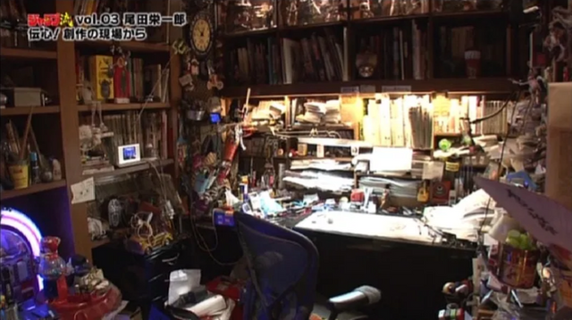

Eiichiro Oda , nacido el 1 de enero de 1976 en la prefectura de Kumamoto es un mangaka japonés, conocido por ser el creador del manga One Piece.
Eiichiro Oda , nacido el 1 de enero de 1976 en la prefectura de Kumamoto es un mangaka japonés, conocido por ser el creador del manga One Piece.Eiichiro Oda , nacido el 1 de enero de 1976 en la prefectura de Kumamoto es un mangaka japonés, conocido por ser el creador del manga One Piece.
Dado el gran éxito que One Piece ha cosechado es el creador de manga que más dinero ha ganado así como el que más copias ha vendido y es considerado, junto a Akira Toriyama, uno de los dibujantes más influyentes de la historia de Japón .Está casado con Chiaki Inaba con quien tiene dos hijas.
Cuando era niño, Oda se inspiró mucho en los piratas y vikingos y aspiraba a convertirse en un artista de manga. Él creo a un personaje llamado Pandaman. Pandaman es un personaje recurrente que hace varios cameos, tanto en el manga como en el anime. También a añadido varios Easter Egg, además de Pandaman a su obra tales como la marca Doskoi Panda. Oda fue inspirado por el creador de Dr. Slump y Dragon Ball, Akira Toriyama. Cuando era joven, le gustaba jugar al fútbol en la escuela y fue apodado Odacchi por sus amigos. Más tarde dio voz a Odacchi en "Rey del Fútbol de Ensueño" corto que fue añadido a la película El reino de Chopper en la isla de los extraños monstruos.
Luego comenzo su carrera como mangakaEn 1992, Oda a los 17 años comenzó su carrera en la industria del manga comenzando como asistente de tres mangakas diferentes para la revista semanal Shonen Jump. Ese mismo año presentó su primera obra titulada Wanted! por la que ganó el segundo lugar en el Premio Tezuka. Al principio trabajó con Masaya Tokuhiro en Jungle King Tar-Chan en 1992. En 1994, trabajó brevemente con Shinobu Kaitani con Kaitani Suizan Police Gang antes de volver a Tokuhiro. En el mismo año, salió de la universidad como un estudiante de primer año. Después de que Jungle King terminó su publicación en 1996, él y Tokuhiro llegó a crear Mizu no Tomodachi Kappaman, que apareció desde 1996 hasta 1996. También en el mismo año fue a trabajar con Nobuhiro Watsuki en Rurouni Kenshin en 1996. Durante este tiempo conoció a Oda Hiroyuki Takei otro asistente de Watsuki, que más tarde seria el creador de Shaman King. Oda dibujó algunas escenas en su manga con su propio estilo artístico.Durante 1994 y 1994, creó otras obras como El regalo de Dios para el futuro (1994), Ikki Yako (1994) y Monsters (1994), esta última más tarde se mezclaría con One Piece.
A finales de 1996, sin dejar de trabajar con Watsuki, creó dos one-shots para su próximo manga inicialmente llamados Romance Dawn, y mucho más tarde Romance Dawn: Amanecer de una aventura, que se convertiría en el primer capítulo de One Piece. En 1997, dejó de trabajar para Nobuhiro, y comenzar a trabajar en One Piece, haciendo muchos de los primeros bocetos One Piece que aparecerían en el Color Walk 1. Planeó la fase inicial de One Piece (capítulos 1-8), antes de que empezara oficialmente. Sin embargo, él hizo muchos cambios, como cambiar el nombre de Boogie a Buggy, cambiando a Zoro de ser un hombre de confianza de Buggy de ser un espadachín errante, y el cambio la apariencia de Morgan (que originalmente iba a parecer un Sumo, pero los editores de Oda querían cambiarlo, y Oda aceptó). Más tarde Nobuhiro Watsuki haría un tributo a su ex-asistente dibujando el Jolly Roger de los Piratas de Sombrero de Paja en un capítulo de Rurouni Kenshin como una imagen sobre una bomba utilizado por Gein, uno de los subordinados de Yukishiro Enishi.
Oda tiene una forma bastante peculiar de dibujar su manga, ya que lo hace todo el, no tiene un equipo de dibujantes o nada por el estilo, el es el que lleva a cabo el manga de one piece en su mayoria, aca veremos un video que recopila informacion dada por oda al rededor de los años sobre como crea su manga
 Al igual que muchos otros mangakas, Eiichiro Oda utiliza diversas herramientas para dibujar su manga. Para hacer bocetos y dibujar cada página del manga, utiliza (como muchos otros artistas de todo el mundo, no sólo mangaka) lápices junto con gomas de borrar y una goma de borrar de arte para corregir los errores. Para la tinta de las páginas, Oda utiliza G-Pen, Pen Maru y bolígrafos recargables afiladas para entintar. Para hacer correcciones después de entintar, utiliza tinta blanca. Para pintar las páginas a color, Oda utiliza marcadores Copic, una marca de marcadores de colores recargables que varios otros mangakas usan para tal fin. Aunque no se ha confirmado, se ha mostrado recientemente que puede pintar con acuarelas. Al igual que muchos otros artistas de manga, Oda parece no utilizar métodos digitales. Esta es una característica que comparte con muchos mangakas, en términos de hacer un manga lo más artesanal posible. Eso es algo que los artistas no japoneses no suelen hacer, sobre todo estadounidenses y europeos, que prefieren la forma digital, a trabajar sobre las herramientas tradicionales, por su sencillez y alta calidad. Aunque no está confirmado, Oda no parece emplear efectos digitales evidentes en sus páginas del manga. Comentó en una de las primeras secciones de SBS que por lo general ya tiene 4 capítulos listos, antes de que se publique uno cada semana, hay una diferencia de tiempo entre el momento en que un capítulo está terminado y enviado a Shueisha, que será publicado en la revista al#008080edor de 4 semanas (a veces más, a veces menos) después. También ha comentado en otra ocasión que tiene un promedio de 6 asistentes que le ayudan en el entintado y dibujando a lápiz los detalles o los fondos y para aplicar los tonos grises. Él ha comentado que él prefiere pintar negro en lugar de utilizar tonos de grises, haciendo su manga casi en blanco y negro, sin tonos de gris. Utiliza tonos grises sólo para realizar efectos especiales (como sombreado a un personaje en una escena dramática, para demostrar un panel bajo el agua, para mostrar una escena en la oscuridad o con planos separados), no para resaltar un color (la única excepción de esto es para el pelo Shanks).
Oda ha dado muchas entrevistas a lo largo de los años pero muy pocas son grabadas, la mayoría son tras las cámara debido a que a los mangakas no los gusta exponerse al público. Tambien es dificil encontrar estas entrevistas ya que en su mayoria estan en japones sin subtitulos
la entrevista mas reciente de oda es la siguiente, en esta entrevista habla sobre la ilustración que está haciendo y la explica a detalles y explica un poco qué es lo que tiene en su cabeza cuando dibuja. Después empieza a hablar de la Jump y de lo que significa para él y qué tan difícil es serializar en esta. Al final da unos consejos para ser mangaka
la siguiente entrevista es de las unicas en las que oda esta presente, esta ocurrio luego del estreno de la película “film gold” y aun asi aunque aparéce en camara, este esta de espaldas sin mostrar su rostro.
Como ya dije antes casi todas las entrevistas de oda son escritar en vez de filmadas, un ejemplo de este mismo seria las siguientes paginas
Entrevista uno- Entrevista dos- Entrevista tres- Entrevista cuatro- Entrevista cinco- Entrevista seis- Entrevista siete- Entrevista ocho- Entrevista nueve